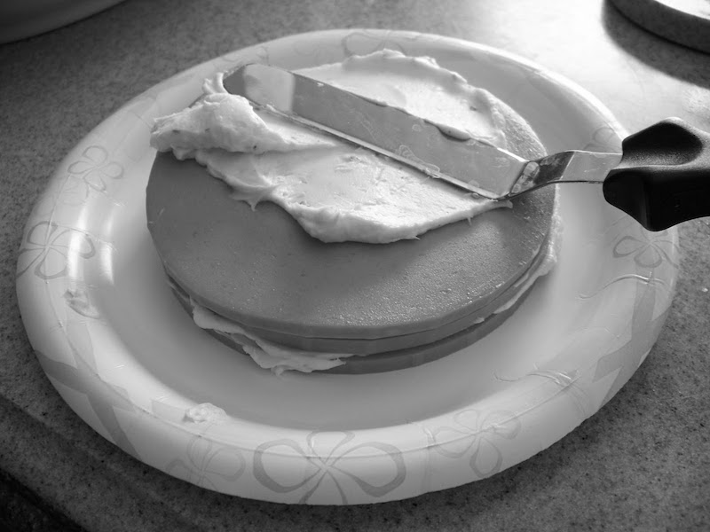

Bologna Cake

I didn't feel any newfound pleasure or joy upon discovering this recipe, but rather the onset of a now ever-present low level despondence. The specific strain of
'misanthrope who wants everyone else to suffer alongside them' that generally prepares this dish is the very same as those
who just 'wanted to see how you'd react'. Please respond by clicking the 'Back' button on your browser.
Alternatively, brave souls may seek to quickly scroll through the following recipe (avert your eyes!) until the 'Home' link at the button can be found.

Ingredients
- 2 packages Cream Cheese (8 ounce packages)
- 1 package Hidden Valley Ranch Dressing (1 ounce packet)
- 12oz of Oscar Meyer Bologna
- 1 8oz can of Sharp Chedder Aerosol Cheese
- 1 whole Sprig of Cilantro or Pimento Stuffed Olive (for garnish)
- 1 package Butter Crackers (Townhome or Ritz)
- Mix ranch dressing into softened cream cheese*, set aside.
- Place a slice of bologna on a plate, spread one tablespoon or so of cream cheese on top of the slice.
- Add a second slice of bologna, then continue until all of the slices are used.
- Then use the remainder of the cream cheese to finish 'frosting' the cake.
- When finished 'frosting' the 'cake', squirt some of the aerosol cheese around the base and top of the cake to decorate it.
- Finish off with a sprig of cilantro on top or some pimento stuffed olives.
- Cut into the 'cake' and place a small wedge on a buttery craker to serve.
Home Page